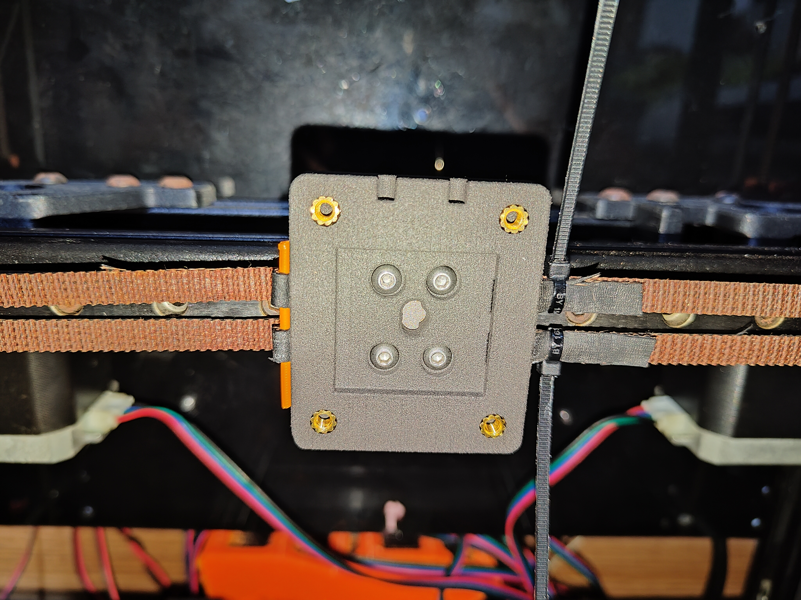
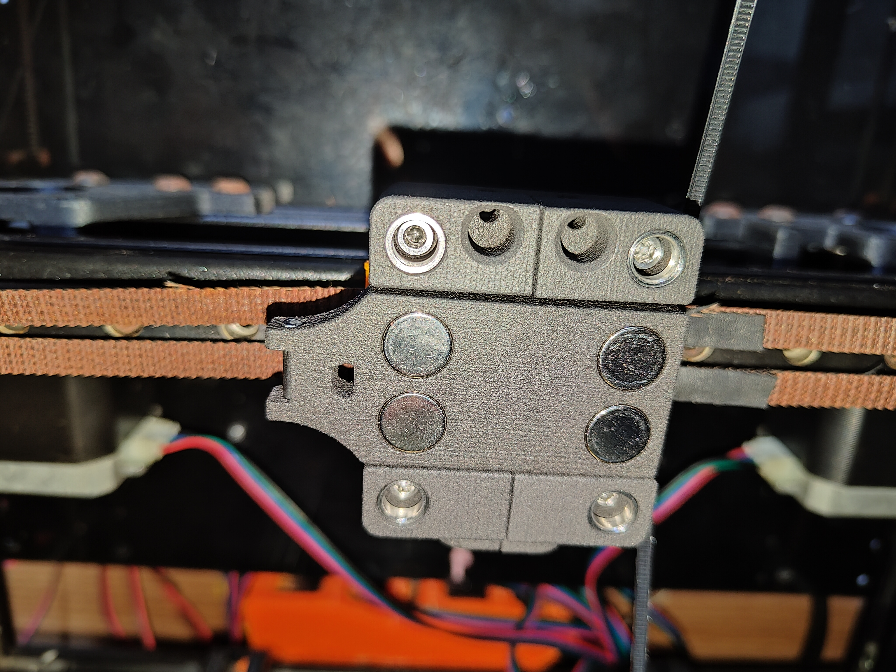
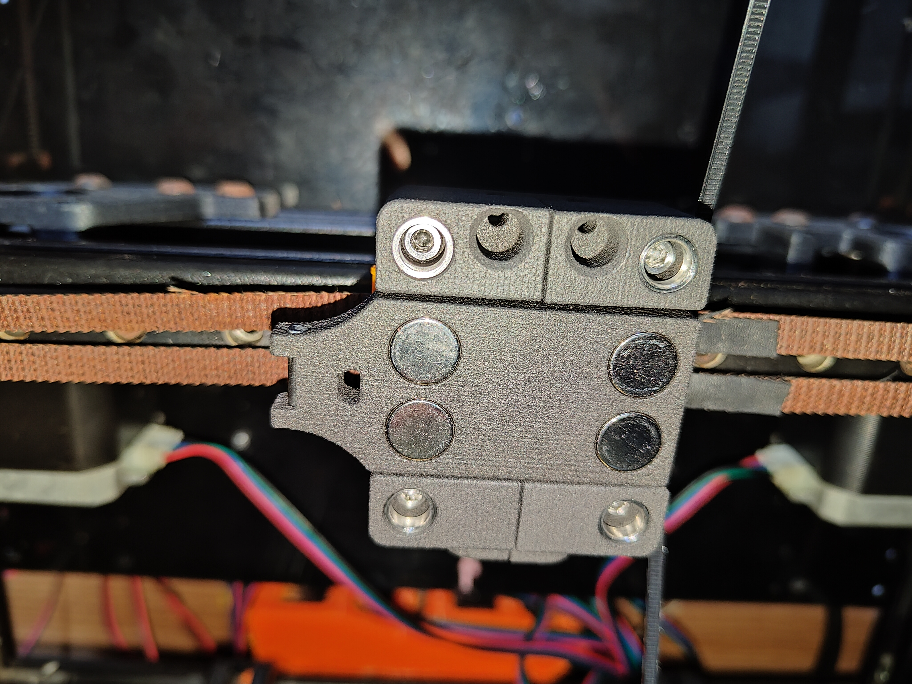

Preparation
Setting in all heat inserts
This is basically straightforward, except for those m4 inserts. This was my first experience with them. My soldering iron tip went right through them! I set them in by pushing at an angle. Hopefully they are all level.

Carriage
Inserting the belts into the slot in the backplate was surprisingly easy, although the Gates were thick and stiff. Securing them was also easy.

Installed magnets and dowel to the locking plate


Attached locking plate to carriage b


Placed bushing to the assembly and screw to carriage A
 
